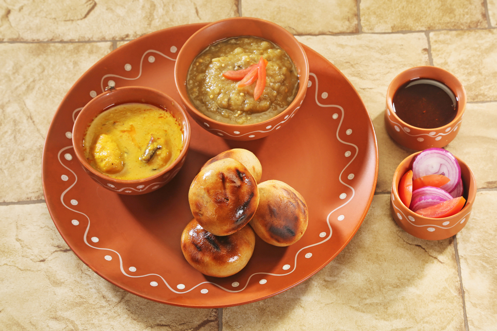

EAST ZONE
Jharkhand: Dhooska
Dhooska or Dhuska or Dushka is a popular deep-fried snack eaten all over Jharkhand, India. The main ingredients in this savoury fried bread dish are powdered rice, powdered chana dal and sometimes boiled potatoes. The bread is then deep fried.
Odisha: Chenna Poda

Chhena poda is a cheese dessert from the Indian state of Odisha. Chhena poda literally means Roasted Cheese in Odia. It is made of well-kneaded homemade fresh cheese chhena, sugar, and suji, and is baked for several hours until it browns.
Bihar: Litti Chowkha
Litti Chowkha is baked from wheat flour dough, stuffed with a mixture of roasted gram flour, spices and lemon juice, and served with chokha (baked and pulped vegetables)
West Bengal: Kosha Mangsho

This Spicy Bengali Mutton Curry aka Kosha Mangsho is a perfect lunch recipe that would be loved by all. Velvety gravy with juicy pieces of meat served with maida luchi (pooris), full of flavors from the mutton, spices and mustard oil.